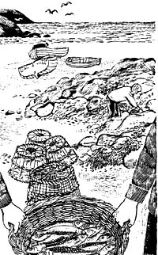
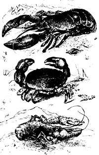

Ah, the vicissitudes of time. Four years ago, when there were NO currently relevant small-scale-farming introductory handbooks available, many of us welcomed the publication of Richard Langer's Grow It! with open arms. Now that we're all older and more experienced, however, some folks find it increasingly easy to criticize that breakthrough beginner's guide (see the Feedback sections of MOTHER NOS. 23, 24, and 25).
Which brings us to another breakthrough book that is just as important (probably more so) now as Grow It! was four years ago ... and which may well come up for its share of criticism in another 48 months or so.
Be that as it may, John and Sally Seymour's record of 18 successful years on a shirttail-sized homestead in England is important now and should offer welcome encouragement to today's back-to-the-landers . . . both real and imaginary. I started serializing the book in my No. 25 issue and I'm sure that many readers will want a personal copy for their home libraries.-MOTHER.
Copyright(restricted) 1973by Jhon and Sally Seymour. Introduction copyright © 1973 by Schocken Books Inc.
The sea is never more than a few hours from us in the British Isles, provided we use mechanical transport, and of course if you live near the sea it is madness not to make use of sea fish. All you need to catch these is a small boat and some gear. The full-time professional fisherman has to go out in all weathers, and scrape about trying to pick up a few fish when there really aren't enough to bother with. He is forced into this by the fact that he has to earn a living for twelve months of the year. The man who has other work to turn to can, however, when fish are scarce, or the weather is bad, avoid going to sea. He need take very little risk and should have a good catch every time he goes out. For if the weather is not fine, or looks the slightest bit unsettled, he has plenty of work to do ashore. And, if he strikes his sea harvests right, a very few days fishing in the year will be enough to keep him and his family, or his community, in fish the year round.
The herring is the acknowledged king of the sea. There is no finer fish and they are excellent for preserving. They come to British shores at various times of the year in various places, but in many places the summer sees the start of them. At first they may well be small fish with immature roes, but the time will come (about October or November on the east coast, perhaps December in Wales) when huge shoals of big fat herring packed with roe or milt come close inshore. Those are the boys to go after. Don't waste time after the others, and above all don't catch spent fish-they are worthless. Spring herring are generally spent.
The best thing for catching herring is the drift net. The new nylon nets are streets ahead of hemp or cotton, and herring drift nets can be obtained ready made up and hung from Bridport Gundry, Bridport, Dorset. They are expensive but you only need about fifty yards. If you hit lucky such a length will give you all you need. Don't go out at all until you have heard that other fishermen have been getting them in quantity. Let somebody else go out night after night prospecting. When you know the fish are there-out you go, and shoot your net close to the shore, or wherever you think the fish are. Shoot it in a straight line so that it hangs like a wall in the water; hang on to one end of it in your boat and play cards, drink rum or go to sleep. But keep a watch and occasionally cast the boat off from the net and row along a little way and haul some net up to see if there are any fish in it. If not-back to the end and hang on again. The net and you will drift with the tide, hence the name drift net. If the fish really hit you you will know immediately because all the corks of the headline, which is all you can see of the net, will sink. Haul the net up immediately. Pay it into the bottom of the boat, fish and all, don't try to shake the fish out of the net on board. Then row, sail or motor back to port, spread a large sail on the sand beside your beached boat, and overhaul the net over it, shaking it hard to get the fish out into the sail.
We find we need three hundred herring to salt down every year for our family. If we had more we wouldn't eat them. Instead of lashing out money for a boat and a net you might consider just buying your herring direct from a fisherman in a time of glut. My boat is round the south coast this year and so I bought from a man in Fishguard two hundred and fifty small herring for a pound. And if that isn't cheap food I don't know what is! But eschew middlemen, at all times.
Having caught your herring you salt them. We head ours so they don't take up so. much room, but professional "Klondykers" leave the heads on. We scrape the scales off, cut the heads off, put the roes in the deep freeze, whip the guts out (pig bucket of course, although heads and guts we often boil first), wash the fish well, and pack them down in a barrel with dry salt. Enough salt really to cover the fish. You can use an earthenware crock just as well as a barrel of course. Naturally you will cover whatever it is.
We have two ways of eating our salt herring. One is in the way in which herrings are eaten at every street corner in Dutch cities having been sold from those colourful booths which fly the Netherlands flag at every corner, and which advertise in large letters Nieuw Haarring. They are advertised as new to give the customer the impression that they haven't been in the salt since Noah cast a drift net from his Ark, but as most of the customers have a hangover anyway they wouldn't notice, for the "new herrings" are the sovereign remedy for this complaint. How the Dutch merchants make them I do not know, but we make them by soaking the salt herrings overnight if they are still only a week or two old but for twenty-four hours if they have been in the salt longer, skinning the fish and then filleting them. We try to pull the ribs out of the fillets unless we are very hungry and can't wait. Then we just eat them. They are very good indeed, and particularly good on bread and butter, on toast, or as "snacks" at parties.
Our other great remedy is to make rollmops of them.
Soak them as above, lay each fish flat on its tummy on a board and press hard down on its back-kneading hard down all along the backbone. Now you can turn him round and pull out the backbone with most of the ribs with it (pig bucket). Now you can just dump the fish into a jar with vinegar and bits of onion, but if you have time and patience it looks prettier to roll each fish up, with a few chips of onion in it, and stick a sharpened match stick through it. Put some pepper corns in the vinegar, and a chilly if you like, cover and put away for a week. Next time you go to a shop enquire the price of rollmops! They will keep about a month, or a bit more.
When the herring are fresh in the salt, say not more than a week in it, I pull them out and hang them in the chimney. I have various cronies whose delight it is to sit around my fireside, late at night, and sop up the home brew they have been drinking by taking these herrings out of the chimney and throwing them on the hot ashes of the fire. After a few minutes they are done and we eat them with our fingers and they are good beyond any telling of it, but then we are probably pretty barbarous people.
The Scottish islanders, and such as live on salt herring for a great part of their diet, I believe soak the salt out of the herring and simply boil them with potatoes. We find them so delicious eaten in the three ways I have described above, and we have so much other meat to eat anyway, that we have seldom experimented with this basic method of cooking. Information on the treatment of salt fish in this country is sorely lacking. There are a score of books which will tell you how to salt fish, but not a single one that I can find that will tell you what to do with them after you have salted them beyond selling them to the Italians. They just know. There is one point I must make about salting herrings: professional salters never head the fish, but "gib" them: that is with one skilful movement of the knife they whip out the gills, the long gut and the stomach, leaving the roe inside the fish. I used to watch the "Scots lassies" doing this at Lowestoft and they did it like lightning. Probably you get a better salt fish this way, for you do not lose the rich oil in the heads, and the fish retains the flavour of the roe. We like herring roe per se though, and since we have had the deep freeze we indulge this taste to the full. Before the deep freeze days we ate roes for days after our little private "herring voyage", and a sprinkling of salt on them would make them keep, in the cold larder, for several days. Vinegar on them would make them keep longer.
If you live near a part of the coast where mackerel come you are very lucky. They come to us in Pembrokeshire about July and keep on, off and on, all summer, ending with a fine flourish with the "harvest mackerel" in September. We catch them with "the feathers". Actually I use a modification of the feathers-"the fish fag", which is an invention from Norway. The principle is the same, and if you live near any part of the coast where mackerel come you have only to ask the first person you meet where to get "the feathers" and how to use them, and he will tell you. You can often catch three or four hundred mackerel in a day like this, and so one day's fishing will stock you up with salt fish for the year. One year the mackerel stubbornly refused to come here, and as I was going for a voyage in my little boat to the south coast of England I was desperate to catch my quota before I left. Alas, by my sailing date I had not caught one, so I sailed away leaving my poor wife and children mackerelless. But as I was rounding Strumble Head I just thought I would try a line overboard. Two hours later I sailed into my first port of call, Porth Gain, with 260 fat mackerel. I telephoned to Sally, she came over in the horseless carriage, and the mackerel were in the salt 'ere midnight. Treat them, in every respect, as you would herring. There is nothing you can do with herring that you can't do with the mackerel. You can freeze mackerel, but not, to any advantage, herring.
To make the various kinds of smoked herring (or mackerel) in the proper professional manner:
KIPPERS. Split down the back. Soak in 70-80 per cent brine (say 3 lbs. per gallon water) for an hour or two. Smoke for six hours at 85° F. (30° C.). (I would say simply leave them in the chimney all night.) They'll keep a week in cold weather-the harder you smoke them the longer they'll keep.
BLOATERS. Don't gut them at all. Leave them in dry salt all night. Smoke them for four hours at 80° F. (27° C.). Again, I just hang 'em in the chimney and forget 'em. I have a neighbor here who used to be beaten as a boy for pinching the herrings from the simnai fawr until it was discovered that an owl had been flying down the chimney and it was this that was responsible for pinching the herrings!
There is a difference between what are known in the trade as cold smoked and cooked smoked fish. In the former the temperature of the smoke must never be allowed to go over 86° F. (30° C.).
BUCKLING are cooked-smoked. They stay in brine for a couple of hours, gutted but unsplit (but leave roe), then hang for-an hour in smoke at 90° F., then 180° F. for an hour. If it goes up to 250° F. (121° C.) it doesn't matter.
In other words they are being cooked at the same time as they are being smoked. You must get them soft. They won't keep long, and like other smoked things are ruined by being put in the deep freeze.
Mackerel feeeze quite well (but should be eaten before three months are up). Herring don't freeze at all well, and I don't recommend it.
SPRATS come to our shores all round Britain, and considering what a delectable fish they are, are woefully neglected. After the first mad rush they sell for ridiculously low prices. You buy them at the peak of the glut, or catch them yourself with a drift net of the right mesh (again Bridport Gundry).
To make Kielersprotten, a common German remedy, soak sprats in 80 per cent brine (as for kippers, see above) for fifteen minutes. Stick them on a speat (sharpened stick) through their gills. Put them, still wet, in smoke at 90° F.
(32° C.) for half an hour then at 180° F. (82° C.) until they are soft and a delicious golden colour. If you put any smoked fish in jars and cover with olive oil or peanut oil they will keep for some time, and if you sterilize before sealing up by heating for half an hour they will keep much longer, and you will have something very like anchovies.
A method of treating salt herrings which a Dutchman told me, but which I have never tried, is to soak the salt herring in fresh water overnight, slice the fillets very thinly, soak in vinegar for an hour, smoke in dense hot smoke for half an hour, and pack in olive oil. It keeps for a couple of months in the winter, and it sounds delicious.
If you get sick of fresh mackerel during the mackerel campaign try this: heat some chopped parsley and a chopped onion in olive oil in a frying pan, shove in the mackerel, fry for five minutes, add three sliced tomatoes, salt. and pepper, some thyme and garlic, cover the pan up and let it simmer for five minutes. It gives mackerel-eating another lease of life.
Pilchards may one day visit these shores again, and in fact they do sometimes approach the south-westerly coasts. In the days when Cornishmen drank a toast to "Tin and Pilchards" before they thought of toasting the King the method of dealing with pilchards was thus:
They were caught in enormous quantities-when they were caught at all-with the seine net (nowadays the gill net or drift net would suit the self-supporter better). The pilchards were laid in plenty of dry salt layers to a height of five feet. They were left thus for a month or six weeks. The oil ran out in great quantities-into gutters, from whence it went into an underground sump where it was stored. The fish were then packed into barrels and often pressed with powerful presses to get the last drop of oil out of them. They were then sent off to the Mediterranean where the people must have been hungrier than the Cousin Jacks were because they would eat them. The oil was then used for lamps, for curing leather, for making soap and for many other purposes. It, and whale oil, were the chief sources of oil in this country for centuries. I merely mention this process here in case any self-supporter wishes to experiment. I have no doubt that either herrings or sprats would yield oil in the same manner. And if the squashed fish were found not much good to eat, and the Italians didn't want 'em, at least they would make excellent fish meal for fertilizer or for pigs or poultry.
If the homesteader wishes to catch white fish he has three courses open to him: hand lining, long-lining and trawling. Hand lining is fun, but only occasionally very productive. Long-lining can be extremely productive of such things as conger eel, hake, cod and codling, haddock and whiting. Trawling is the only method by which you are likely to catch soles, and any quantity at least of plaice or other flat fish. You can buy little beam trawl nets from Bridport Gundry: they sell one small enough to be towed behind a 20-foot open boat with a Seagull engine. You can make up a long line yourself, but I recommend that you buy swivel hooks. Professional long lines may have a thousand hooks or more on them, but if you have a hundred you will catch quite a lot of fish-that is provided there are any fish there. The usual thing is to shoot them at night and pick them up in the early morning. In the summer you probably don't get much but dog fish (marvellous for pig food) but in the winter you should get other fish. I cannot go into detail about either trawling or long-lining here, but there are sure to be professional fishermen near you somewhere, and if you do as they do you will fare all right. There is a very good book, InshoreFishing by Stan Judd, published by Fishing News. I have been long-lining with Mr. Judd and we caught half a ton of conger eels so he seems to know his job.
Now for preserving your white fish when you have caught them. Flat fish are best put in the deep freeze where they freeze quite well, but don't keep them too long: perhaps three months is long enough. Everything loses its flavour in time in the deep freeze.
Thick fish, such as coddling, haddock and whiting, can be salted. Split the bigger fish, such as cod, and rip out the backbone except the tail which you keep as a handle. Pile in dry salt and let the juice run away (compare with oily fish such as herring, where you do not let the juice run away but leave the fish in their "pickle"). After a few days with small fish, but 15 days with big cod, pull the fish out of the salt and expose on racks to the air and the sun-but not to the rain. A more scientific way is the Gaspe' cure. Fill a tub with 7 lbs. salt (if it be winter-9 lbs. if summer) and 100 lbs. split fish. Leave in brine for 48 to 72 hours depending on size of fish. Pull them out and stack them for six hours. Dry in sun and wind.
This sort of fish will keep indefinitely. You can cook it how you like but you should soak it for at least 36 hours before you do so or you will have a thirst that the waters of Niagara will scarcely quench.
Smoke haddocks, after half an hour in brine, for a few hours in cool smoke, or hot smoke to make "smokies".
Lobsters, crabs and crawfish may be taken in pots (see your local fishermen). The "parlour pot" much used in the north east coast is best for the occasional fisherman, for it can be left down a week or more and the lobsters are unlikely to get out. Also the bait will not be eaten and will go on working. It has a "parlour" at one end of the pot into which the lobsters can crawl and thus leave the bait chamber. Salt herring make good bait for lobsters but crabs like fresh fish. Whisper it not in sporting circles but a tin of Kit-e-Kat with a few holes punched in it will bring 'em in.
The new tangle net, or ray net, is the best way of catching shell fish though, and will catch anything else that happens along. It's a killer, and if used indiscriminately will denude our coasts. A short length for a self-supporting family or community is quite justifiable though (Bridport Gundry).
Skates and rays should be "winged", that is the head part cut right out with a semi-circular cut of the knife, and the tail part and guts served the same. This leaves the two-wings" tied together by the middle. Hang the wings up in the wind for a few days before you cook them. Scald the wings in boiling water for a few seconds to skin. Haul the thorns of thornback off with a pair of pincers. Cook by frying in milk and butter, pepper and salt and what have you.
Dorothy Hartley gives this recipe for conger eel in Food in England, but I have not tried it. Take the whole middle out of a big conger, rub inside with a cut onion, wipe over with a little dry mustard. Stuff with a good well-flavoured forcemeat and sew up strongly. Cut an apple in two and use each half to plug the ends. Tie up with tape like a packet. Roast it with dripping and cider, basting often. Eat with samphire pickle.
To skin a sole, scale its bottom by scraping. Skin its top by nicking the skin near the tail and pulling forward-but following your pulling hand with your other hand to hold the flesh down, otherwise you will rip it off.
Oysters can be preserved: steam for half an hour; soak for five minutes in brine of 2 lbs. salt in 1 gallon water; dip in olive oil; lay on wire trays and smoke in hot dense smoke (180° F.) for half an hour. Turn them once during this treatment.
Pack in jars, fill up with oil, sterilize in a pressure cooker at 15 lbs. pressure for 15 minutes, or for half an hour by standing the jars in boiling water. Seal. I have never done this but got it out of a book.
The east coast fisherman pot mackerel or herring, and we do too. Cut your fish up into chunks (three or four from a fish), salt in dry salt for twelve hours, wash the salt out, put them in an earthenware pot and cover with vinegar. The usual bay leaves, pepper corns, a chilly, and whatever common sense suggests. Cover with greaseproof paper and put in a slow oven overnight. Take out, make sure it is well covered, and it will keep until mackerels come again. Don't mind if a little mould forms on top of the vinegar. Eat cold, late at night when you come home from the pub and your wife has nothing to welcome you with but tongue pie, cold bum and the copperstick.
|
|
 |
 |